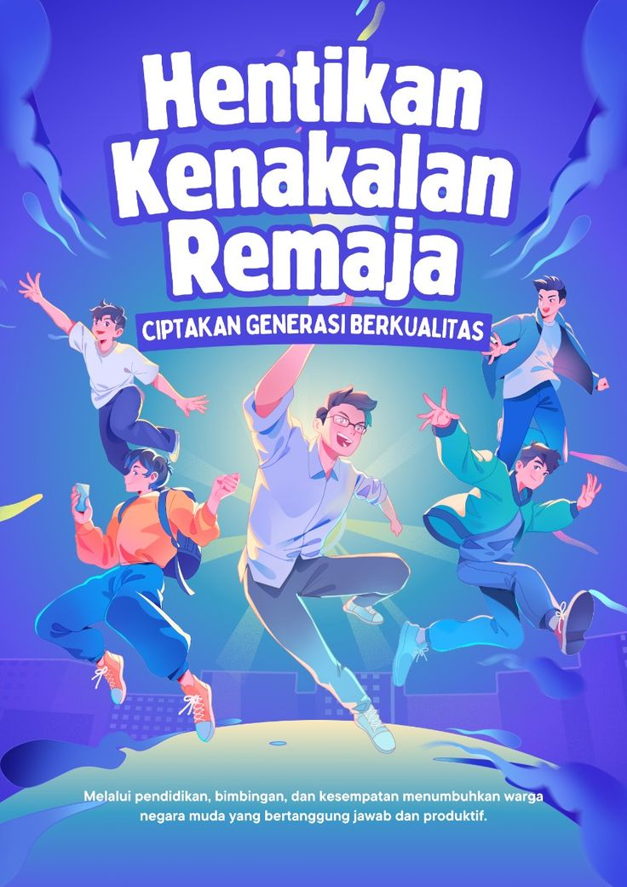

poster

poster iki nggambarke pesen kanggo para remaja supaya luwih ngati-ati karo tumindak sing bisa ngrusak masa depane. ing tengah poster ana siluet cah enom sing lagi neng persimpangan dalan: siji dalan padhang karo cah suryo, lan siji dalan peteng kebak simbol penyimpangan kaya rokok, alkohol, lan pergaulan bebas. warna latar dominan biru lan kuning supaya nuwuhake rasa tenang nanging tetep ngelingake. ing sisih ngisor ana tulisan tagline “aja rusak masa mudamu” nganggo huruf gedhe lan tebal, dadi pesen utama iso katon cetha. poster iki ngajak remaja supaya mikir sadurunge tumindak, milih dalan sing bener, lan tetep fokus nggawe masa depan sing cerah.